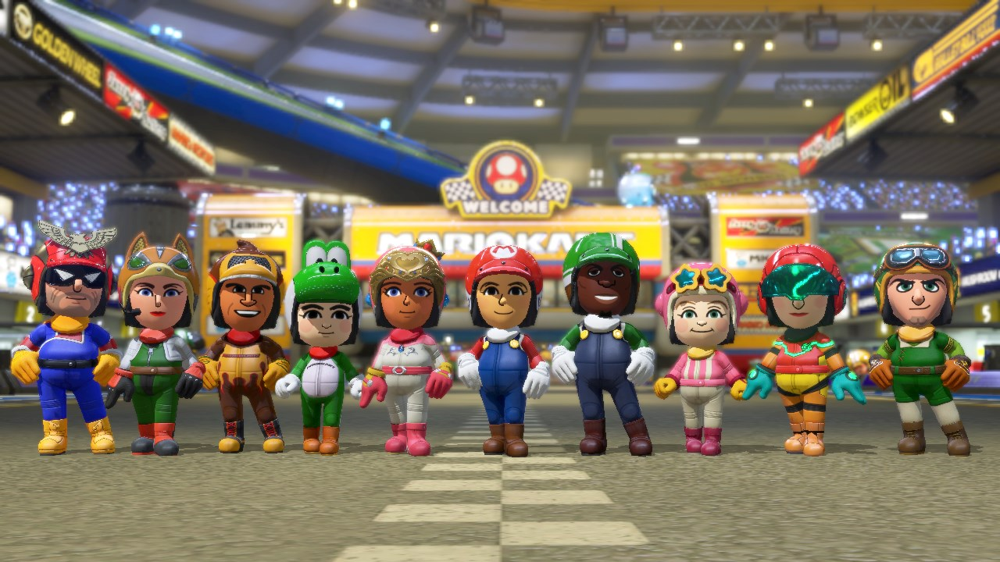

🏎️ Vuela, Gira y Compite con Estilo
Imágenes y Pistas Exclusivas
La versión definitiva del aclamado juego de carreras te permite disfrutar de todos los circuitos y personajes en cualquier lugar. ¡La diversión nunca termina!

Mario Kart 8 Deluxe ha sido actualizado con un renovado Modo de Batalla y la inclusión de nuevos personajes. El juego ahora cuenta con un total de 46 personajes jugables, y se han añadido nuevos personajes como Diddy Kong, Floro Piraña, Hermano Martillo, Placapum, Topo Monty, y otros que se han confirmado para futuras oleadas. Además, el juego ha recibido actualizaciones que mejoran el equilibrio y la jugabilidad, y ha añadido nuevos circuitos y objetos para enriquecer la experiencia de juego.

**Modo Batalla Extremo:** El modo Batalla ha sido rediseñado e incluye el "Asalto al Sol" y la "Batalla de Globos", ofreciendo desafíos frenéticos para todos los jugadores.
Tabla de Especificaciones
| Plataforma | Nintendo Switch |
|---|---|
| Género | Carreras, Karts |
| Jugadores | 1 a 12 (Local y Online) |
| Contenido Incluido | Juego base + 48 pistas DLC originales |
| Novedades | 2 'deluxe' como personajes invitados, Modo Batalla renovado |